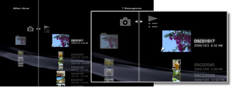
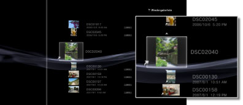

Foto > Verwenden von Wiedergabelisten > Bearbeiten von Wiedergabelisten
Bearbeiten von Wiedergabelisten
Sie können Bilder zu einer Wiedergabeliste hinzufügen oder daraus löschen oder die Bilder in einer Wiedergabeliste in einer anderen Reihenfolge anordnen.
Hinzufügen von Bildern zu Wiedergabelisten
1. |
Wählen Sie |
|---|---|
2. |
Wählen Sie die zu bearbeitende Wiedergabeliste aus und drücken Sie die |
3. |
Wählen Sie [Bearbeiten].  |
4. |
Drücken Sie die |
 (Foto) >
(Foto) >  (Wiedergabelisten).
(Wiedergabelisten). -Taste.
-Taste. -Taste und wählen Sie das zur Wiedergabeliste hinzuzufügende Bild aus den auf der Festplatte gespeicherten Bildern aus. Das Bild wird zur Wiedergabeliste hinzugefügt. Wenn Sie keine weiteren Bilder mehr hinzufügen möchten, drücken Sie die
-Taste und wählen Sie das zur Wiedergabeliste hinzuzufügende Bild aus den auf der Festplatte gespeicherten Bildern aus. Das Bild wird zur Wiedergabeliste hinzugefügt. Wenn Sie keine weiteren Bilder mehr hinzufügen möchten, drücken Sie die  -Taste, um die Bearbeitung zu beenden.
-Taste, um die Bearbeitung zu beenden.Löschen von Bildern aus Wiedergabelisten
1. |
Wählen Sie |
|---|---|
2. |
Wählen Sie die zu bearbeitende Wiedergabeliste aus und drücken Sie die |
3. |
Wählen Sie [Bearbeiten]. |
4. |
Wählen Sie das Bild, das Sie aus der Wiedergabeliste löschen möchten, und drücken Sie auf die |
 -Taste. Das Bild wird aus der Wiedergabeliste gelöscht. Wenn Sie keine weiteren Bilder mehr löschen möchten, drücken Sie die
-Taste. Das Bild wird aus der Wiedergabeliste gelöscht. Wenn Sie keine weiteren Bilder mehr löschen möchten, drücken Sie die Anmerkungen
- Auch wenn ein Bild aus einer Wiedergabeliste gelöscht wird, wird die Bilddatei nicht von der Festplatte gelöscht.
- Wenn ein Bild, das zu einer Wiedergabeliste hinzugefügt wurde, von der Festplatte gelöscht wird, wird das Bild automatisch auch aus der Wiedergabeliste gelöscht.
Neuanordnen von Bildern in Wiedergabelisten
1. |
Wählen Sie |
|---|---|
2. |
Wählen Sie die zu bearbeitende Wiedergabeliste aus und drücken Sie die |
3. |
Wählen Sie [Bearbeiten]. |
4. |
Wählen Sie das Bild, das Sie verschieben möchten, und drücken Sie auf die  |
5. |
Verschieben Sie das Bild mit den |
 -Taste.
-Taste.
 -Tasten an die gewünschte Position und drücken Sie die
-Tasten an die gewünschte Position und drücken Sie die